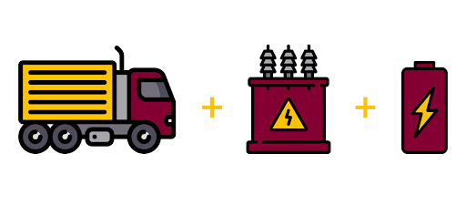
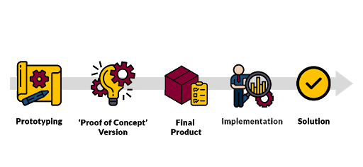
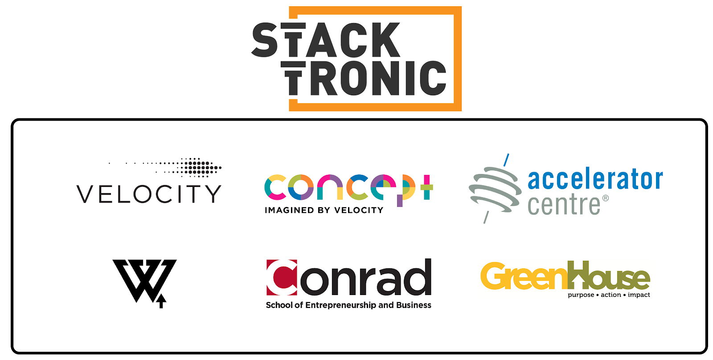

Q: Could you tell us a little bit more about Stacktronic and about the problem you’re trying to solve?
Keith Teeple: Stacktronic’s ultimate aim is to reduce greenhouse gas emissions in the materials sector. Currently, people are aware of the amount of greenhouse emissions from cars and trucks on highways but ignore the fact that industrial vehicles account for hundreds of millions of tons of carbon emissions per year. We know that all vehicles need to go electric eventually but currently there is nobody making batteries for industrial vehicles. Everyone's focused on the Teslas and Chevys of the world, and manufacturers are developing electric busses and trucks, but industrial vehicles have been largely left behind. The goal of our project is to come up with a battery system that is purpose-built for industrial vehicles.
In terms of the problem, we first came across it after talking to many vehicle manufacturers. What we realized is that they update the vehicle frame for the chassis very infrequently: only once every 10-15 years! So, we needed to come up with a product that could fit under the existing hood. What Stacktronic has done is we've created a modular battery that connects like lego bricks and allows you to build battery packs of any shape, size and capacity. That way firms don’t have to make changes to the vehicles and can just integrate our battery into their vehicles. Despite vehicles having different power requirements, the modularity of our product allows industrial vehicle manufacturers to use Stacktronic’s one standardized product to electrify all of their vehicles.
Could you tell us a little bit more about where your product is in the product-development stage and what you’re looking to accomplish in the near future?
Keith Teeple: Right now, we're in the prototyping phase. For our Capstone project here at the University of Waterloo, we developed a low-energy proof-of-concept version and now we are working on the second full energy battery to be finished by the end of the year.
The plan is to be ready to begin producing a product in April 2020 and actually start putting it in vehicles in Q3 or early Q4 of 2020.
Your founding team is a team of mechanical engineering students who came together for your Capstone project. How has the process been from moving from an academic project to a real-world startup and product?
Keith Teeple: Moving from an academic setting to running a business has been a big learning curve. We had no experience when it came to business previously. Our team has had to do a lot of research on our own, so being in this position has demanded that we learn new things quickly.
However, the mentorship and support the university has provided to us through the Velocity and Concept programs on campus have been wonderful. Through Velocity, we had access to really good business and technical mentorship. Similarly, the Accelerator Centre north of the University of Waterloo campus has helped us with almost every aspect of business. I can say confidently that if we did not have the fantastic mentors we have now, Stacktronic would not be the business we are today. They have been really fundamental in training us to become more than just technical people and better at the business side of things. Overall though, the experience has been challenging but incredibly rewarding.
How do you divide roles as a team and what has your experience been like?
Keith Teeple: In the beginning, we all worked as equals. We did everything very democratically and it worked because we got along so well. However, we quickly learned that if we didn't have people assigned to and in charge of specific tasks, then we were simply treading water and not moving forward as a company. As a result, we divided up the roles. Despite our team being responsible for different things, we still operate as equals when it comes to company decisions. For me personally, I stepped into the CEO role, so now I handle all the business tasks, including company and investor-facing engagements. As a result, the other three members of our team can focus primarily on building our product.
You talk a lot about the support ecosystem that Waterloo offers. Are there any specific resources you recommend that an aspiring entrepreneur begin with?
Keith Teeple: When you’re starting out, don’t plan on making a business. If you're just setting out to make a business for the sake of it, it is probably not the way to go. You should identify something that generates value for someone. Then build a product around it and validate that idea. When you find out that your solution is what people actually want, then that is when I recommend moving to the business side of things. Once you have validated that what you're working on is worthwhile, Waterloo is a great place for startups because there are so many good resources here.
Reach out to Concept, Velocity, and consider entering into the Velocity Garage. The Accelerator Centre, and Communitech are other fantastic resources in downtown Kitchener that have helped many entrepreneurs.
Have there been any big challenges that your team has faced since starting on this project?
Keith Teeple: There have been a few both on the technical and business side. On the technical side, we were trying to figure out what kind of battery we wanted to build. We had to decide between building a high voltage battery or a many low voltage batteries. This was natural as bigger batteries would be more appropriate for large vehicles, and smaller vehicles would be underserved and vice versa. What we were really trying to do is to come up with a solution that would be ideal for the maximum number of vehicles.
On the business side, we had to learn how to communicate with non-technical people. Our team had just spent the last five years in a University of Waterloo engineering program surrounded by highly technical engineers. As a result, it was quite a challenge to understand how to speak with investors and customers who may not have had a similar background. The key was developing an understanding of how to speak about highly technical concepts in a non-technical way.
Q: You regularly compete in different startup and entrepreneurship competitions… How has that played a role in the growth of your startup?
Keith Teeple: So they've been fantastic on both a personal and business level. On the personal level they have taught me how to be a public speaker, how to be charismatic, and how to get an audience engaged in a product that you're excited about. On the business side, it has given us a lot of exposure and significantly helped grow our network to both investors and customers. For all those early stage startups, begin by creating a really good pitch deck and get comfortable with presenting it within 3 to 5 minutes.
I think something really interesting about pitches is that if you have to cover so many different things all at once. You have to talk about topics from your product, to the problem it solves, to the stage of product development you’re in.
What do you think entrepreneurs should focus on when it comes to their pitch?
Keith Teeple: It definitely depends on who you're talking to. If you're talking to customers, your pitch should be focused on how you're solving a problem for them and how you are adding value to their company. If an investor puts money in your company, they are expecting that they are going to get a sizable return on it. You need to demonstrate in your pitch that you have a sound business model and how you plan on using the funds. Essentially, you are watching your audience and tailoring your presentation to what their needs and wants.
What do you have in mind for the future of Stacktronic?
Keith Teeple: In the short term, it's all about building our products, getting it ready for manufacturing, and then delivering on for pilot tests. Late next year, we want to begin the pilot testing program by working with a few different vehicle manufacturers and electrifying some of their vehicles. Afterwards, we hope to test our batteries on a small scale to do a proof of concept, demonstrate feasibility and hopefully to start to gain some traction in the industry. In the long-term, we want to roll out more products that will potentially power trains ranging from hardware and software. Finally, in the super long-term, we want Stacktronic to be the go-to solution for the electrification of vehicles across all industries: construction, agriculture, mining, and forestry.
More and more people are interested in pursuing entrepreneurship nowadays. What advice do you have for aspiring entrepreneurs in both work and in life?
Keith Teeple: For aspiring entrepreneurs, I would say to try and find a cool project that you are passionate about and throw yourself entirely into it. The way that we ended up finding our product was because our team was so passionate about it and we kept talking about it to everyone. When I look back now, we have really come so far in learning how to operate as a company. If you throw yourself into it, you will eventually win as you will build a mentor network with people to help you when you need it. Focus on building something useful and valuable, seek help when you need it, and immerse yourself into it.
Bibliography
- 1Stacktronic Batteries Logo Image. (n.d.). Retrieved February 16, 2020, from https://stacktronic.ca/